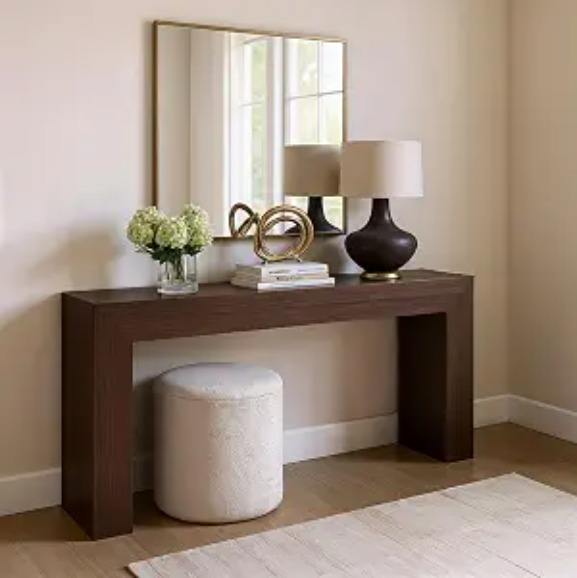

Furniture sets the bones of a room, but lighting is what decides how it feels once the sun goes down. A single warm lamp in the right corner can do more for "cozy" than a whole collection of pillows, and a lot of these picks cost less than you'd expect for the mood shift they bring.
We rounded up the lighting and decor finds we'd put in our own cart, grouped by where they work best, plus the furniture, bath, and pet pieces that were too good to leave out.
For bedrooms and nightstands
Soft, low, and easy to fall asleep to.

Capslpad Feather Tripod Table Lamp
A 15.3" white feather shade on a gold tripod base — the kind of lamp that reads "styled," not "afterthought." Takes a standard E26 bulb (a warm 11W LED is the sweet spot), and the long cord means you're not stuck placing it right next to an outlet.
Check price on Amazon
JALL Full-Screen Sunrise Alarm Clock
This does a lot in one device: sunrise simulation to wake you up gently, 25 natural sound options, dual alarms, FM radio, a Bluetooth speaker, and 17 dimmable colors for a soft night light. If your phone is currently your alarm clock, this is the upgrade that gets it out of your bedroom entirely.
Check price on Amazon
Rechargeable Clip-On Book Light
18 LEDs, up to 100 lumens, and 5 color temperatures from a warm 1800K to a crisp 6000K daylight — with a quiet dial so you're not clicking a switch next to someone trying to sleep. Built for reading in bed without needing the room light on.
Check price on Amazon
Fivemengo Wabi-Sabi Lantern Lamp
A Japandi-styled lantern lamp built for the quiet, textured look that's having a real moment right now — think warm paper-lantern glow with none of the fire risk. Reads as intentional on a nightstand in a way most plastic night lights don't.
Check price on Amazon
Jellyfish Ambient Lamp with Remote
Color-gradient, remote-controlled, and rechargeable — a genuinely calming slow color shift that works as well for a kid's room as it does as a quiet adult nightlight. Novelty shape, but the effect itself is more soothing than gimmicky.
Check price on AmazonFor living rooms and shared spaces
Bigger presence, meant to be seen from across the room.

Govee RGBIC Corner Floor Lamp
A 1000lm color-changing corner floor lamp that fills an awkward empty corner with actual purpose. App and remote controlled, so you can shift from bright white for movie night to a low amber glow for everything else, without touching a switch.
Check price on Amazon
KARTOOSH Battery-Operated Wall Sconces (Set of Two)
No electrician, no hardwiring — these charge over USB-C and run 15-50 hours per charge. Dimmable across 3000K-6000K with a remote, which makes them one of the easiest ways to add real wall lighting to a rental.
Check price on Amazon
Magnetic Battery-Operated Picture Lights (3-Pack)
Purpose-built to light artwork and framed photos — magnetic mount, 3 lighting modes (warm, cool, neutral), remote control, and an auto-off timer. A cheap way to make a gallery wall look gallery-lit instead of just hung.
Check price on Amazon
Modern Cordless Ivy String Lights, 33ft
Leaf-shaped LED string lights with remote control, made for wall-hanging rather than just draping — a fast way to soften a bare wall with texture and warm light at the same time. No cords to hide since it's battery-run.
Check price on Amazon
FULEN Motion Sensor Wall Lamps (4-Pack)
These turn on automatically when you walk past, which makes them genuinely useful in a hallway, staircase, or the path to a bathroom at night — not just decorative. Wireless, rechargeable, remote-controlled across 3 colors, with adjustable brightness for the up-and-down light spread.
Check price on Amazon
Orange Mushroom Floor Lamp, 60" Mid-Century Modern
This is the statement piece on the list, not the subtle one — a 60-inch globe floor lamp in a bold orange, leaning fully into mid-century modern styling. If a corner needs to be impossible to ignore, this is the pick.
Check price on AmazonFor a little personality
The playful pieces that make a room feel like yours.

Donut-Shaped Ambient Bedroom Lamp
A soft-glow, donut-shaped accent lamp built purely for atmosphere over function — the kind of small, slightly playful piece that photographs well and does exactly one job: making a nightstand feel warmer.
Check price on Amazon
Mushroom Table Lamp
The mushroom lamp trend earns its popularity honestly — the rounded shade diffuses light softly in every direction rather than throwing a harsh spot, which is why it works equally well as a desk lamp or a low-key nightstand piece.
Check price on Amazon
Mushroom-Shaped Accent Night Light
A second, more compact take on the mushroom shape — smaller footprint, built more as a night light than a reading lamp. A good pick if you want the aesthetic without giving up desk space.
Check price on Amazon
23.6" Plug-In Paper Lantern Pendant Lamp
A soft paper lantern pendant with a long 19.7ft cord, so you can actually hang it away from an outlet — over a reading chair, above a bed, or in a bare corner that needs a warm focal point. Plug-in, not hardwired, so it works in a rental too.
Check price on AmazonFor bath and quiet self-care moments
Small upgrades to the room that gets the least design attention.

Waterproof Shower Lamp & Ocean Projector
A genuinely dual-purpose piece — waterproof enough for actual shower use, projecting a slow ocean-wave light pattern, but it also works unplugged as a regular rechargeable table lamp elsewhere in the house. One product covering two different moods.
Check price on Amazon
Long Rectangular Moss Bath Mat
An aesthetic, absorbent bath mat styled to look like a strip of real moss — a small detail swap that makes a plain bathroom floor feel considerably more designed, without a full renovation.
Check price on AmazonFurniture and wall pieces
Not lamps, but they earned their place on this list anyway.

Yusong Geometric Industrial Bookshelf
An open-frame ladder-style bookshelf with a geometric metal structure — the kind of piece that adds visual interest to a room even before you've put a single book on it. Works well as a room divider too if your space needs one.
Check price on Amazon
Oversized Industrial Upholstered Armchair
A big, cocooning armchair with an industrial edge — the kind of statement seat that anchors a reading corner instantly. If your living room has one awkward empty corner, this is a strong contender to fill it.
Check price on Amazon
LAMOOSHIK Walnut Finish Wall Shelves
Simple floating shelves in a warm walnut finish — the kind of understated piece that quietly upgrades a wall of plants, books, or framed photos without competing with what's displayed on it.
Check price on Amazon
Plank+Beam Grand Console Table, 66" Walnut Wirebrush
A 66-inch solid-wood console with a clean, chunky-legged silhouette and a rich walnut wirebrush finish. It's long enough to carry a pair of table lamps, a vase, and a mirror behind it, which makes it a natural anchor for an entryway or the back of a sofa. The listing notes non-toxic finishes and easy assembly.
Check price on AmazonFor the pets in your life
Because the cat has opinions about the living room too.
URZCT Door-Hanging Cat Tree Shelf
A cat tree shelf that hangs over a door, so it gives a cat a perch without taking up any floor space. Handy for small apartments and rentals. Check the listing for door-thickness fit and weight limits before you order.
Check price on AmazonHow we'd start, if we were you
If you're only picking one or two things off this list, start with a nightstand lamp (the feather tripod or the wabi-sabi lantern) and one wall or corner light (the sconces or the Govee floor lamp). Those two changes shift a room's evening mood more than almost anything else here. Everything else is a bonus once you know the space actually needs it.